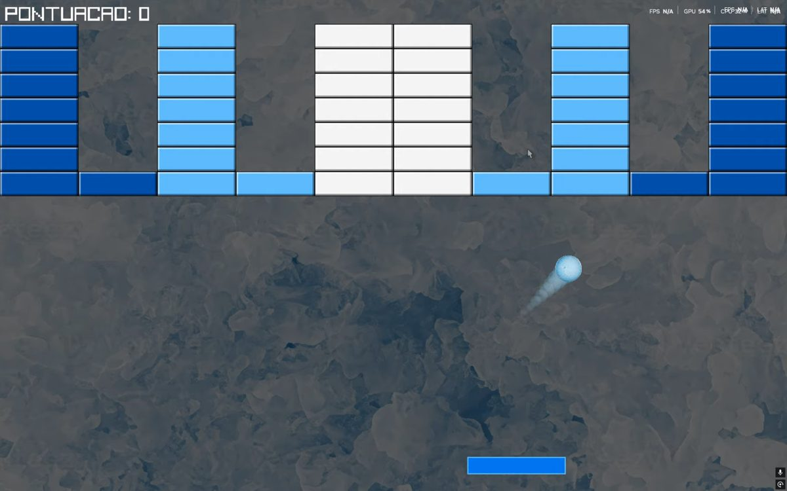

Sushi Em Casa
cliente realSistema web de pedidos desenvolvido para um cliente real, com deploy no Azure Web App e CI/CD no GitHub Actions rodando testes unitários e com Selenium.
aberto a estágio · Recife, PE
Python · Django · Visão Computacional · CESAR School
Estudo Ciência da Computação e desenvolvo sistemas web com Python e Django e soluções de visão computacional. Do protótipo no Figma ao deploy no Azure, com testes automatizados no GitHub Actions.

$ whoami
João Arthur Gomes Duarte
joao = { "curso": "Ciência da Computação", "onde": "CESAR School, Recife", "desde": "02/2025", "stack": ["Python", "Django", "PostgreSQL"], "foco": ["web", "visão computacional", "jogos"], } # procurando estágio
Gosto de resolver problemas reais com código limpo e trabalho em equipe.
No back-end, trabalho com Python, Django, Django REST Framework e PostgreSQL. No Sushi Em Casa, sistema de pedidos feito para um cliente real, cuidei do deploy no Azure com CI/CD no GitHub Actions, rodando testes unitários e com Selenium, a partir de protótipos no Figma.
Em IA, desenvolvo uma API de visão computacional com OpenCV e YOLOv8 e já integrei a API do Gemini (NLP) para gerar quizzes. Também desenvolvi jogos em Unity/C# e em C, sempre em times com Scrum e Kanban, usando Taiga e Trello.
O que desenvolvi, com o que usei e o estado de cada um.
Sistema web de pedidos desenvolvido para um cliente real, com deploy no Azure Web App e CI/CD no GitHub Actions rodando testes unitários e com Selenium.
Atendente virtual no estilo WhatsApp para clínicas e salões: FAQ, agendamento, remarcação, cancelamento e transferência para humano, com painel do dono. Hoje é uma demonstração web com agenda simulada, criada para validar uma oferta de serviços para pequenos negócios de Recife.
textContentDecisões: regras fixas, sem modelo de linguagem, na demonstração (custo zero e comportamento previsível no contexto de saúde); coleta mínima de dados (só o nome) pensando na LGPD; e nada de API não oficial de WhatsApp.
Roadmap:
Desenvolvido com apoio de IA (Claude) na prototipação, nos testes e na documentação.
API em Python com OpenCV e YOLOv8 para contagem automatizada de cachos de uva, apoiando o monitoramento de produtividade na colheita em Petrolina.

Sistemas e lógica de jogos em C# com Unity, com Orientação a Objetos, em equipe Scrum. Backlog e sprints no Taiga e em quadros Kanban.
c# · unity · scrum · taiga
código da Forja Games (abre em nova aba)
Versão do clássico Arkanoid em C puro, com Raylib para gráficos e threads para concorrência: física de colisão, partículas e gerenciamento de estado.
c · raylib · pthreads
código do Arkanoid em C (abre em nova aba)Ferramentas que uso nos meus projetos.
Revisão sistemática que compara três técnicas (TAS, DVFS e Undervolting) usadas para melhorar a eficiência energética de GPUs em computação de alto desempenho (HPC). O artigo ainda não foi publicado.
gpu · hpc · eficiência energética · revisão sistemática
CESAR School, Recife
Formação com foco em engenharia de software, algoritmos e desenvolvimento de sistemas. Participação em projetos práticos e metodologias ágeis.
Projeto Brasilino
Educador de lógica de programação para crianças e adolescentes neurodivergentes, adaptando metodologias de ensino para inclusão digital.
SEBRAE
Análise de requisitos e levantamento de dados com Matriz CSD para identificar certezas, suposições e dúvidas de problemas reais de negócios.
Estou aberto a estágios, oportunidades, parcerias e novos desafios.